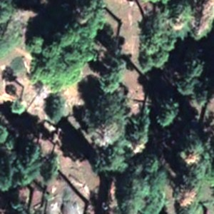
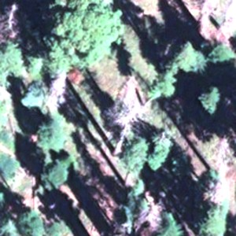

After logging in, the map loads with the most recent capture visible. All imagery is from the most recent delivery covering the survey region.
2. Navigating the Map
Captures
The viewer contains 6 captures, each covering a different area. Use the Captures panel to switch between them:
Captures
double-click to jump to capture boundary
Site F East — Narrow sliver east of Site F Grove
Site G North — Strip north of Site G Grove
Site F — Contains Site F Grove
Site B — Contains Site B, Site H & Site I Groves
Site C — Contains Site D, Site E & Site J Groves
Site A — Contains Site A, Site K & Site L Groves
Single click — switch to that capture (layers swap, camera stays)
Double-click — switch and fly to the capture's boundary. This is the fastest way to jump between areas.
Right-click a capture button to get a context menu:
🗺 Fly to Site C
Hover over the i badge — see which groves are included in the capture
Go to Coordinates
If you know the location you want to inspect, type coordinates into the search box at the top of the panel in lat, lng format and press Enter:
Go to Coordinates
The map flies to that location and drops a red marker. Then click through captures until the satellite imagery lights up — that tells you which capture covers your point of interest.
Tip: The imagery comes from diagonal satellite strips, so not every capture covers every location within its bounding box. If a capture shows black at your coordinates, try another one.
Raster Layers
Switch between three imagery layers at the bottom of the panel:
NED — near-infrared, red edge & deep blue satellite bands
NDVI — vegetation index (greener = more photosynthetic activity)
The Opacity slider lets you dim the raster to better see detection polygons underneath.
3. Recommended Workflow: Finding Dead & Damaged Trees
The model classifies each detected tree crown by species (mature, sapling, other) and health (normal, dead, fire damage, top-down threat). Use the filters to isolate the trees you're interested in.
Step-by-step: Finding dead mature trees
1Set Color By to Health
This color-codes polygons: normal, dead, fire damage, top-down threat.
2Apply species + health filters
For dead mature trees:
p_seqmat ≥0.30
p_dead ≥0.30
For top-down threat trees:
p_seqmat ≥0.30
p_topdownt ≥0.30
3Browse the map
Zoom in and scroll around. Matching tree crowns appear as colored polygons. Hover over a polygon to highlight it. Click to see detailed stats including species/health probabilities, canopy size, and center coordinates (with a copy button).
4Copy coordinates for field reference
Click any detection polygon to open its popup. The Center row shows lat/lng coordinates with a copy button — click it to copy to your clipboard for GPS navigation or reporting.
Important: Probability filters are chained with AND, not OR. Setting p_dead ≥ 0.3 AND p_topdownt ≥ 0.3 simultaneously will show almost nothing, because trees are rarely tagged with both conditions at high confidence. Filter for one health condition at a time.
Understanding the controls
Detection Confidence
Score ≥0.50
Species Probabilities
p_seqmat ≥0.30
p_seqsp ≥0
p_tree ≥0
Health Probabilities
p_dead ≥0.30
p_firedama ≥0
p_normal ≥0
p_topdownt ≥0
Bbox Size (meters)
Width ≥0
Height ≥0
Detection Confidence — how confident the model is that a tree crown exists at that location. Best kept around 0.50. Lowering it shows more detections but introduces false positives; raising it keeps only the most certain detections.
Species Probabilities — filter by species prediction confidence. p_seqmat = mature, p_seqsp = sapling, p_tree = other.
Health Probabilities — filter by health prediction confidence. p_dead, p_firedama (fire damage), p_normal, p_topdownt (top-down threat / crown dieback).
Bbox Size — canopy width and height in meters, derived from the detection bounding box and 0.3m pixel resolution. Useful for filtering large/old-growth trees (e.g., Width ≥ 10m).
4. Comparing a Tree Across Captures (Show History)
When multiple captures overlap the same area (e.g., August 2025 and June 2022 imagery), you can compare how a specific tree looks across different dates. This is useful for tracking changes in tree health over time.
How to use Show History
1Right-click on a detection polygon
Find a tree you want to inspect. Right-click on its colored detection polygon to open the context menu.
2Click "Show history"
The context menu shows a clock icon with 🕒 Show history at the top (this only appears when you right-click on a detection polygon, not on empty map space). Click it.
🕒 Show history
📍 Place a marker
3Compare across captures
A dark overlay appears with side-by-side mini maps — one for each capture that covers this location. Each mini map shows:
The satellite imagery (RGB, NED, or NDVI — whichever raster layer you currently have selected)
Detection outlines color-coded by the current Color By mode (species or health)
The capture name as a label above each tile
The view is centered on the tree you right-clicked, zoomed to show the canopy and its immediate surroundings.
4Close the overlay
Click the × button in the top-right corner, or click anywhere outside the mini maps to close.
Example: Tracking a tree across time
Navigate to Site A using coordinates <lat>, <lng> and switch to the Aug 2025 — Site A capture. Right-click on a detection polygon near the center and select 🕒 Show history.
Since both the June 2022 and August 2025 captures overlap here, you'll see two mini maps side by side. Here's what it looks like:
tree — <lat>, <lng>
Site A — June 2022

Aug 2025 — Site A

Normal
Dead
Top-down Threat
In this example, you can compare the same trees between June 2022 (left) and August 2025 (right). Look for changes in canopy cover, new red outlines (newly dead trees), or shifts from green to yellow (emerging top-down threat). The detection outlines reflect the model's health classification at each time point.
Tip: Show history only works where captures overlap. Many trees are only covered by a single capture — in that case, you'll see just one mini map. The Site A area has the best overlap between the June 2022 and August 2025 imagery.
5. Case Study: Inspecting Site E & Site D Groves
Goal: Survey dead and threatened trees in the Site E and Site D Groves
Both groves are covered by the Aug 2025 — Site C capture.
1Navigate to the capture
Click "Aug 2025 — Site C" in the Captures panel. Double-click it (or right-click → "Fly to capture") to fly to the area.
2Jump to Site E Grove
Type these coordinates into the search box and press Enter:
<lat>, <lng>
The map flies to the heart of Site E Grove.
3Filter for dead mature trees
Set the following filters:
Color ByHealth
p_seqmat ≥0.30
p_dead ≥0.30
Red polygons (dead) will appear over tree crowns the model identifies as dead mature trees. Zoom in to see individual detections.
4Switch to Site D Grove
Enter Site D Grove coordinates:
<lat>, <lng>
The same filters stay applied. Compare the density and pattern of dead trees between the two groves.
5Check top-down threat
Reset p_dead to 0, then set p_topdownt ≥ 0.30. Yellow polygons (top-down threat) show trees with possible crown dieback — early indicators of decline.
6Inspect individual trees
Click any polygon to see its full stats. Copy the center coordinates for field verification or reporting.
6. Tips & Reference
Rendering
Capture names reflect the predominant grove, but most captures cover additional groves too. Hover over the i badge on each capture button to see the full list of groves covered.
Detection polygons may not all render when zoomed out — this is normal for vector tile rendering. Zoom in and pan around to see all detections in an area.
Lower the raster opacity to make detection polygons more visible against the imagery.
Hover over any polygon to highlight it with a white outline, dimming the others.
Filters
All probability filters are AND conditions. Setting multiple health filters simultaneously (e.g., p_dead + p_topdownt) will show very few results. Filter one condition at a time.
Polygon color reflects the top prediction, not your filter. If you filter by p_topdownt ≥ 0.3, you may still see red (dead) polygons — this means the tree passed your filter (p_topdownt ≥ 0.3) but its highest health prediction is actually "dead" (e.g., p_dead=0.4, p_topdownt=0.3). Click the polygon to see the full probability breakdown.
Detection Confidence (Score) is best kept around 0.50. This balances recall (finding trees) vs. precision (avoiding false positives).
Bbox Width/Height correspond to canopy dimensions in meters. Useful for isolating large old-growth trees (try Width ≥ 8–10m) or filtering out small understory detections.
Capture coverage
Capture
Groves Covered
Site F East
Narrow sliver east of Site F Grove
Site G North
Strip north of Site G Grove
Site F
Site F Grove
Site B
Site B, Site H & Site I Groves
Site C
Site D, Site E & Site J Groves
Site A
Site A, Site K & Site L Groves
Quick reference coordinates
Coordinates are specific to each deployment and are not listed here. Use the Groves picker in the sidebar to jump to a grove, or read the values for your instance from data/groves.geojson.
Location
Coordinates
Capture
Site E Grove
<lat>, <lng>
Site C
Site D Grove
<lat>, <lng>
Site C
Site A (center)
<lat>, <lng>
Site A
Site B Grove
<lat>, <lng>
Site B
Site F Grove
<lat>, <lng>
Site F
Scout Tree • 0.3m satellite imagery • RT-DETR-L detection model